09:00–09:15
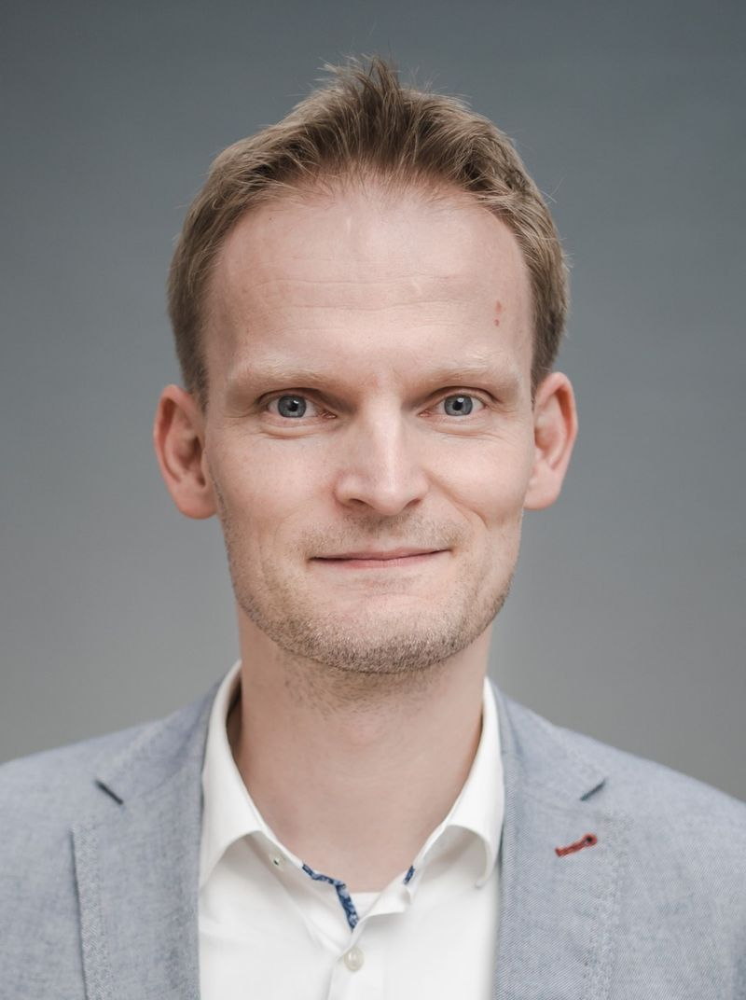
Robert Wille
Opening

Opening
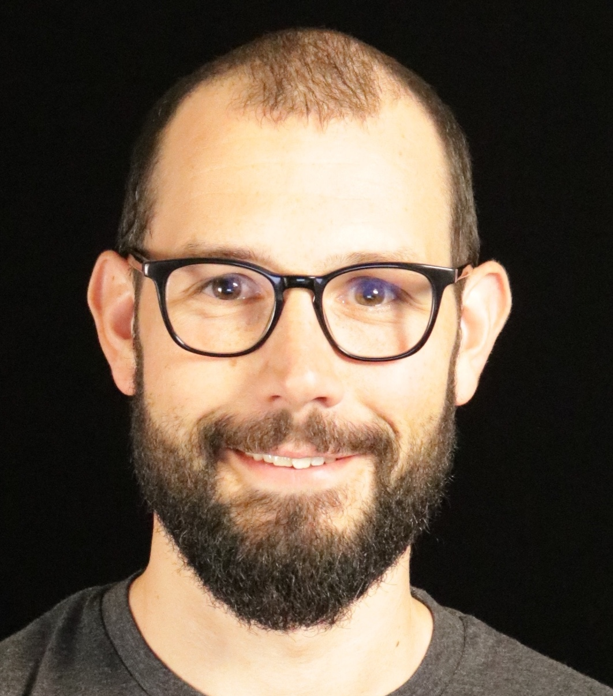
Quantum-Classical Integration on AWS: From Workflow Patterns to Scalable Architectures
Quantum computers execute one part of a larger computation, and their integration with classical resources is becoming a central focus of the field. AWS offers access to quantum computers through Amazon Braket, alongside a broad set of services for classical compute, storage, networking, and orchestration. This talk explores how to combine these building blocks into scalable architectures that follow the patterns of the actual workload. I will present examples from collaborations with industry, research, and open-source communities, spanning cloud-native solutions and the integration of third-party quantum software stacks.
Sebastian Stern is a Principal Quantum Solutions Architect at AWS. He works with customers, partners, and the open-source community on the integration of quantum and classical resources for hybrid workflows in the cloud. Sebastian completed his PhD at the Max Planck Institute for Physics and worked on Higgs boson research at CERN, where large-scale distributed data analysis sparked his interest in scalable computing workflows.
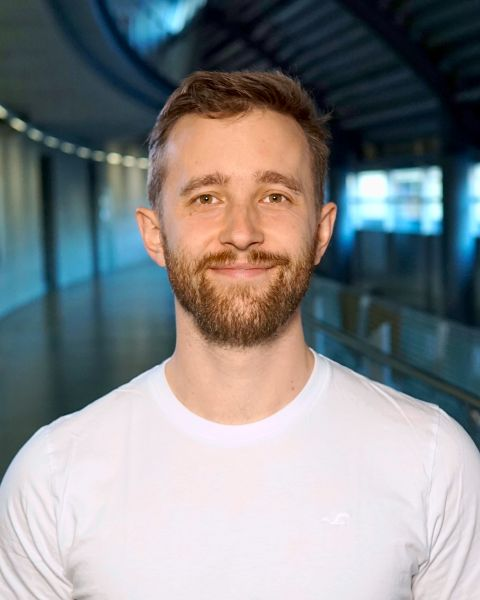
System Software for Quantum Computing: From the Metal to the User
Making quantum computers useful requires software that connects applications, classical computation, and quantum hardware. As quantum programs become more complex, that software must handle classical control flow, adapt to different devices, and fit into the computing infrastructure people already use. At MQSC, we are building the tools and open interfaces that bring these pieces together. This talk showcases MQT Core and the Quantum Device Management Interface (QDMI) through an interactive journey across an integrated quantum software stack. We will explore how a modern compiler transforms hybrid programs into executable workloads, how device information guides compilation, and how common interfaces connect applications to simulators, quantum hardware, and HPC environments. A quantum-assisted scientific computing workflow will make these connections concrete. Along the way, we will examine the breadth of programs the compiler supports and the practical tradeoffs between compilation time and the quality of generated circuits. The focus is on working software: what developers can use today, how the components fit together, and how they help put quantum computing to work.
Lukas Burgholzer is CTO and co-founder of the Munich Quantum Software Company (MQSC), where he translates quantum-software research into practical tools and integrated software stacks. He is also a Senior Researcher at the Technical University of Munich’s Chair for Design Automation. He serves as chief developer of the Munich Quantum Toolkit (MQT), technical lead of the Munich Quantum Software Stack (MQSS), and a lead developer and maintainer of the Quantum Device Management Interface (QDMI). His work spans quantum compilation, simulation, verification, and the integration of quantum computing into high-performance computing environments. He received his PhD in Computer Science from Johannes Kepler University Linz in 2023. His distinctions include the Bavarian High-Tech Young Talent Award (2026), the EDAA Outstanding Dissertation Award (2025), the ACM SIGDA Outstanding PhD Dissertation Award (2024), and the Heinz Zemanek Prize (2024).
Hide presentations
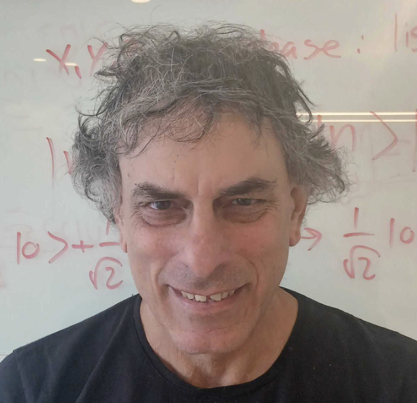
AI-First Approach to Quantum Software
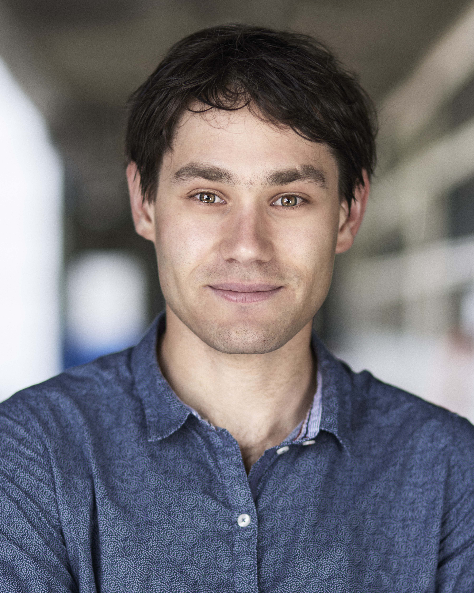
Alice & Bob
Hide presentations
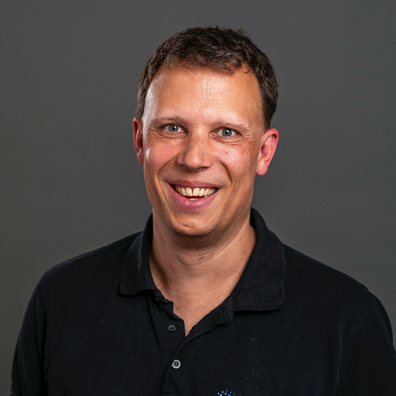
Everything Works at Eight Qubits: Building Quantum Algorithms That Scale
Quantum algorithms that work convincingly at small scale routinely fail at the scale where the underlying problems become interesting — often because the bottleneck limiting an algorithm at small sizes is not the one that limits it at relevant sizes.
This raises the central question the talk addresses: how to build algorithms that scale for a machine that does not yet exist and cannot be benchmarked against. planqc’s approach uses tensor networks to study problems at realistic sizes and with realistic structure entirely on classical computers, revealing where a method breaks down before we commit to it — I will show results from industrial optimisation problems. The second half of the problem is the algorithms themselves: I will present our work on making variational methods trainable at scale, which is what turns a classical insight into something a quantum computer can execute.
Martin Kiffner is Head of Quantum Solutions and Hardware Modelling at planqc, where he leads around 30 researchers working out where neutral-atom quantum computers will be genuinely useful. A theoretical physicist by training, he spent over a decade in research at Oxford and at the Centre for Quantum Technologies in Singapore and was among the first to apply tensor networks to fluid dynamics. His main interest lies at the boundary between classical and quantum methods.
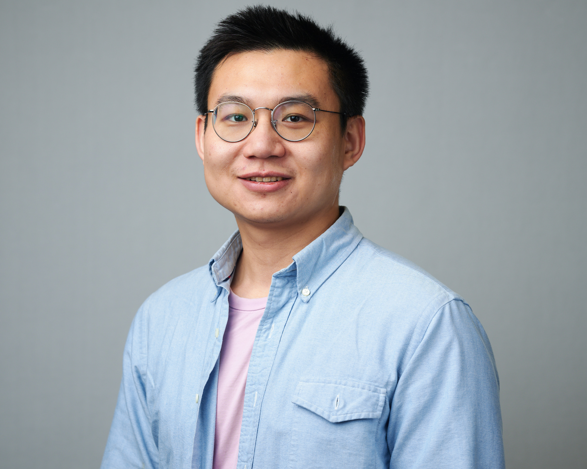
Bloqade: Software for Fault-Tolerant Quantum Computing with Neutral Atoms
Bloqade is the software stack we are building at QuEra Computing to program neutral-atom quantum computers. It brings together a compilation pipeline from quantum circuits to atom movements and control pulses, tools for exploring neutral-atom architectures, and an emulation environment for quantum error correction cycles, noisy circuits, and pulse dynamics. In this talk, I will give an accessible overview of Bloqade and the architecture research it supports, then discuss open questions for the community as we work toward fault-tolerant quantum computing with neutral atoms.
Xiu-Zhe (Roger) Luo is Director of Scientific Software at QuEra Computing, where he leads the development of quantum compilers, numerical tools, and algorithms for neutral-atom platforms. His interests span computational quantum many-body physics, machine learning, and open-source scientific software. He did his PhD work at the University of Waterloo and the Perimeter Institute. More: rogerluo.dev
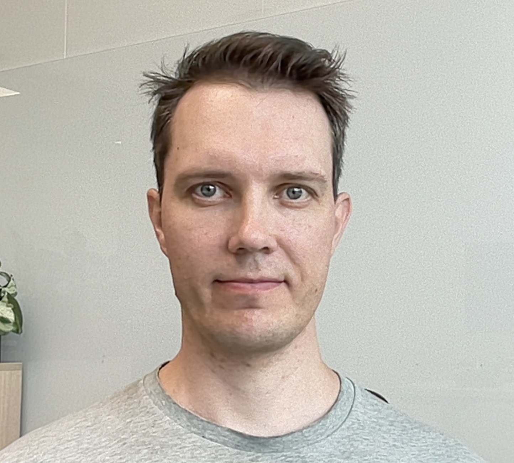
From NISQ to Fault Tolerance: An Open Architecture for Quantum Innovation
Quantum computers have transitioned from laboratory prototypes to production systems, and software serves as the critical bridge between hardware capabilities and end-user value. This talk traces IQM software path from present-day operational reality toward long-term, fault-tolerant quantum computing. We will explore our open approach for software stack, what it means today and in the future and how it helps move QEC research even more into experimental work on superconducting quantum computers.
Janne Mäntylä is Head of Software Development at IQM Quantum Computers, a global leader in quantum computers sold and delivered to customers. He leads the organization building software that on one side controls the electronics instruments and on the other side provides programming frameworks for users and researchers. Before leading the department, Janne worked as a Lead Software Engineer, building hands-on the software that controls the company's quantum computers.
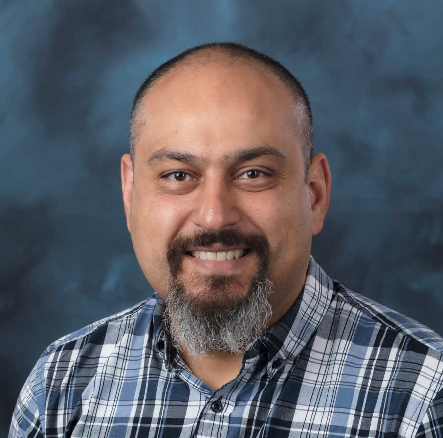
openQSE: A Collaborative Path toward Interoperable Quantum–HPC Systems
The integration of quantum processors with high-performance computing systems requires shared software architectures, well-defined interfaces, and common abstractions spanning applications, workflows, schedulers, runtimes, compilers, and quantum hardware. This talk will introduce the Open Quantum–HPC Software Ecosystem (openQSE), a highly collaborative, vendor-neutral initiative involving more than 30 institutions from the national-laboratory, academic, HPC, and quantum-computing communities. It will summarize the openQSE reference architecture, recently described in an arXiv publication, and discuss how the architecture is being refined through the collaborative development of its first reference implementation for the SC26 demonstration. This implementation effort is providing an opportunity to translate the architecture into working software, test its assumptions, and evolve the interfaces and abstractions based on practical experience.
Opening
Quantum-Centric Supercomputing: Rethinking Heterogeneous Architectures for the Quantum Era
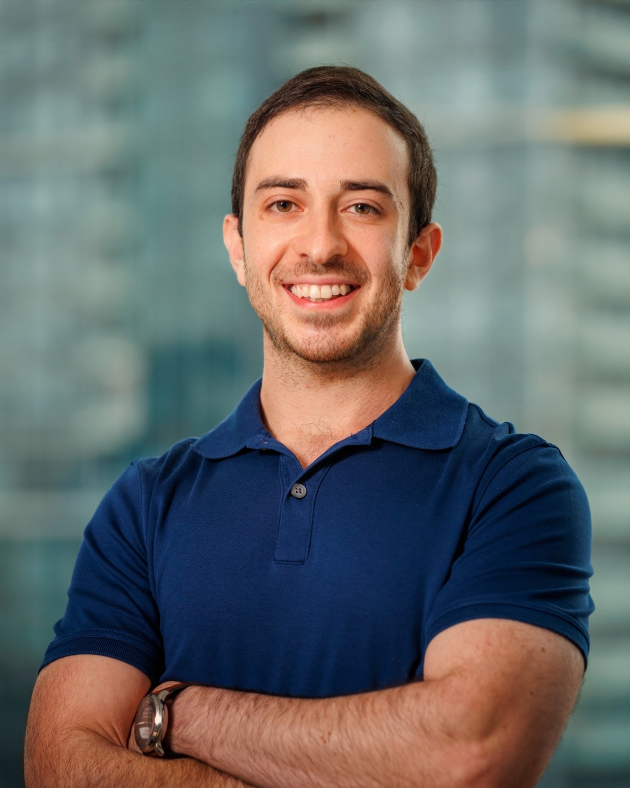
Python in the Front, Party in the Backline: Compiling Low-Latency Quantum Workloads across CPUs, GPUs, and FPGAs
Hide presentations
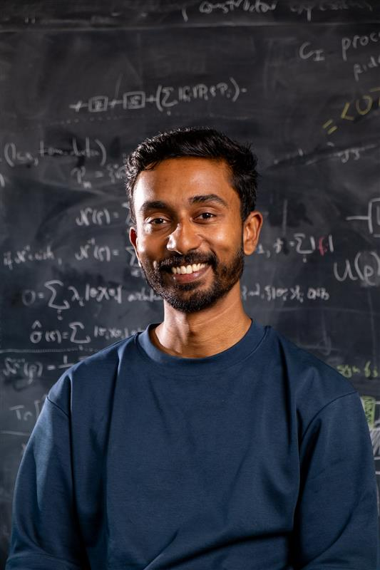
Guppy in Action: Practical Quantum Software Development
Guppy is Quantinuum’s quantum programming language, built for production use and running on real quantum computers. It lets developers combine quantum and classical computation, write programs that respond to measurement results, and catch common mistakes before execution, all using familiar Pythonic syntax.
Through live demos that attendees can follow along with, this talk demonstrates Guppy’s capabilities for developing quantum software beyond static circuits. We’ll then introduce recent extensions for quantum error correction and fault-tolerant programming, alongside reusable algorithm building blocks that help developers adapt their programs as hardware and error-correction strategies evolve.
Seyon is Chief Architect for Developer Tools at Quantinuum, based primarily in the Cambridge, UK office. This includes the programming language Guppy, the intermediate representation HUGR, the TKET compiler and emulation tooling. Seyon joined Quantinuum in 2017 with a background in physics and initially worked on the original TKET project, followed by the Tierkreis hybrid workflow engine.
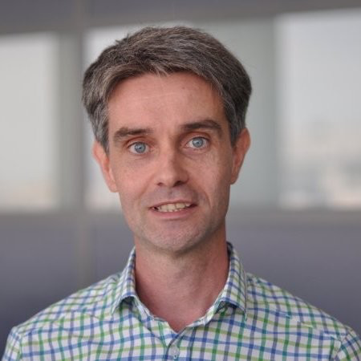
From Spins and Photons to Programs: Software Layers for Photonic Quantum Computing
Photonic quantum computing introduces a distinctive programming model in which software spans both quantum abstractions and physical processes. This is particularly visible in SPOQC, Quandela’s spin–photonic architecture for fault-tolerant quantum computing: stationary spin qubits generate entangled photons, photonic measurements produce heralded entangling operations, and their outcomes drive low-latency feedforward. Drawing on Perceval, MerLin and the SPOQC toolchain, this talk will follow the software layers connecting physical components to compilation, orchestration and hybrid quantum–classical programs. Physical simulation is a central part of this stack—not simply an emulator, but an engine for hardware–software co-design, compiler validation, resource estimation and the study of classical simulability. I will illustrate this with recent GPU methods for simulating entangled spin-emitter states without expanding their exponentially many photonic components. I will also discuss how AI is moving from being an application above the quantum stack to becoming embedded throughout it: assisting software development, accelerating simulation and system design, and enabling increasingly automated control and calibration.
Jean Senellart is Chief Technology and Product Officer at Quandela, where he leads the development of its photonic quantum-computing platforms and software stack, including Perceval and MerLin. He previously served as CEO of SYSTRAN and co-founded OpenNMT, one of the first major open-source neural machine-translation frameworks. His current work focuses on photonic fault-tolerant quantum computing, hybrid quantum–AI systems and quantum software.
Hide presentations
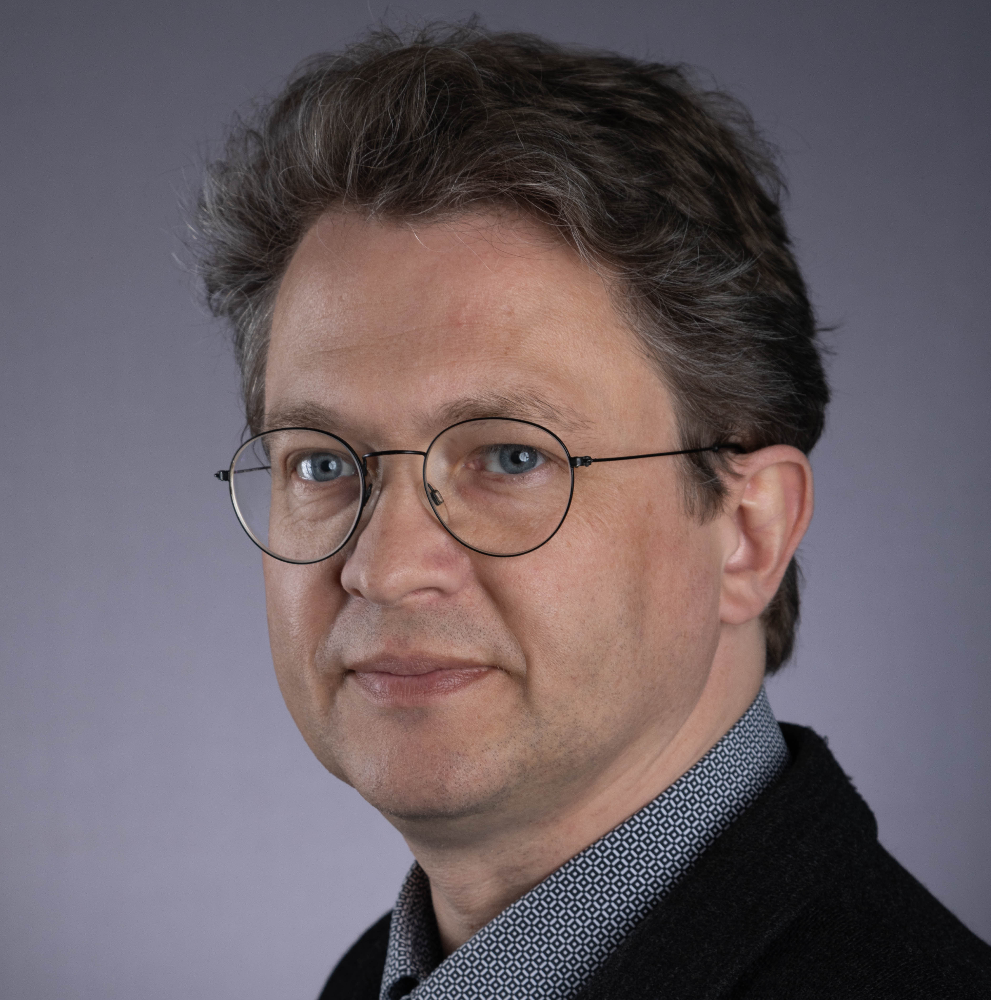
Making Quantum Devices Just Another IT Component: An Integrator’s View
Quantum computing is evolving from individual NISQ device ‘snowflakes’ toward error-corrected building blocks integrated into distributed Quantum-HPC systems. This transition introduces new challenges related to infrastructure, operations, and software. We believe these challenges need to be addressed well before roadmaps predict fault-tolerant quantum computing (FTQC) devices will reach the scale required for broad integration around 2030. We will discuss environmental, energetic, system management, and software requirements based on the assumption that QPUs may become as ubiquitous as other accelerators within a decade.
Utz-Uwe Haus, Sr. Distinguished Technologist and Director of the HPE EMEA Research Lab (ERL), studied mathematics and computer science at the Technical University of Berlin (TU Berlin) and holds a doctorate in mathematics from the University of Magdeburg (Germany). He worked on nonstandard applications of mathematical optimization in chemical engineering, material science, and systems biology. After five years as senior researcher at the Department of Mathematics of ETH Zürich, he co-founded CERL, the CRAY EMEA Research Lab in 2015, which he transformed into the EMEA part of Hewlett Packard Labs. His current interests focus on enabling middleware for sustainable and secure usage of HPC/AI systems, quantum system integration and digital twins.
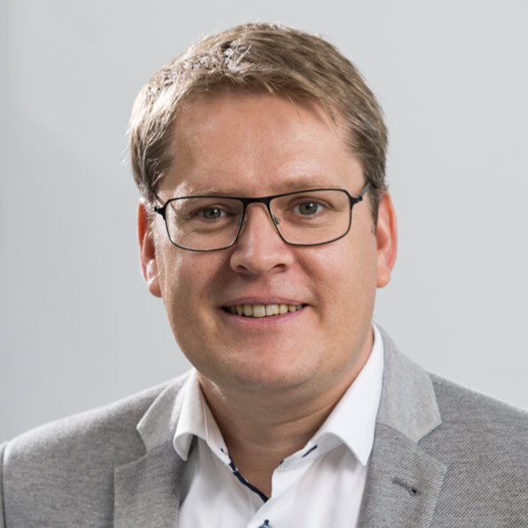
Alternative Pathways to Quantum Fault-Tolerance: From Code Switching to Universal Measurement-Free Quantum Computing
To date, the construction of scalable fault-tolerant quantum computers remains a fundamental scientific and technological challenge. In my talk, I will discuss alternative approaches to scalable, universal fault-tolerant quantum computing, based on new theory concepts, such as novel protocols for code switching, autonomous and measurement-free quantum computing. I will also discuss recent collaborative research at the interface of theoretical and experimental physics and computer science, which has given rise to experimental breakthroughs in state-of-the-art quantum processors, and I will outline some of the related challenges to develop scalable software for the starting era of fault-tolerant quantum computing with logical qubits.
I am a professor in theoretical quantum physics, and since the beginning of this year, I am Director of the Institute PGI-2 at Forschungszentrum Jülich and leading the Group for the Theory of Scalable Quantum Information Processing at the Institute for Quantum Information at RWTH Aachen University in Germany. Our main research focus lies on quantum error correction and fault-tolerant quantum computing, and on new approaches to scalable and robust quantum information processing. Most of our work has a strong connection to hardware realisations in atomic as well as solid-state platforms, and we enjoy if our work can help in bridging the gap between theoretical models and experimental implementations of fault-tolerant quantum computing.
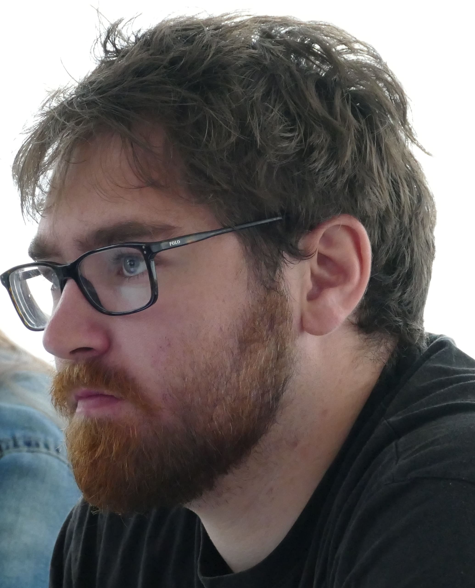
Making Quantum Computing Composable with HPC
The hard part is no longer access but composition: making a QPU something programs and HPC systems can build with. This talk follows that problem from hybrid programs to the data centre: vendor-neutral interfaces such as QRMI, quantum-aware middlewares complementing the workload scheduler, SDKs and workflows that run unchanged, on-prem or in the cloud. We will present lessons learned building and running this software.
Aleksander is the technical lead for quantum-centric HPC at Pasqal, where he focuses on integrating quantum computing with classical HPC systems and building hybrid quantum-classical workflows. Previously at Pasqal, he worked as a quantum software engineer and technical lead across quantum software and numerical simulation of quantum systems.
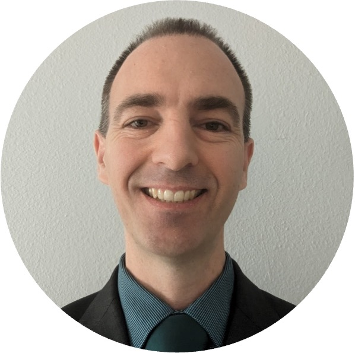
tqec: Compiling to State-of-the-Art Lattice Surgery
Lattice surgery is a complex and rapidly evolving field, and the tqec community, now over 1200 people from around the world, exists to both enable people to learn this field and provide an open source tool to study and advance it. In this talk I will review how both the literature and the tqec tool have advanced over the last 12 months, and the exciting road ahead.
Dr. Austin Fowler is an independent researcher with a passion for open access learning and collaborative work. The tqec project, his sole focus these days, was born at the MQSF in 2023. He has been involved in topological quantum error correction since 2008, and has participated in numerous theoretical and experimental milestones on the path to realizing a practical large-scale quantum computer.
Throughout the event, a dedicated MQSF Community Area with tables will be available for informal discussions, follow-up meetings, demonstrations, hands-on sessions, and deeper technical exchanges. Feel free to invite attendees to join you in that area.
If you would like to reserve a table for a dedicated discussion, demo, tutorial, hands-on session, or similar gathering, add that to the timetable below. We will be happy to reserve a table and provide a corresponding sign indicating the activity and time. In case of any questions and/or problems, write a mail to simon@mq.sc.
Beyond that, we encourage everyone to use the community area spontaneously as a place for community-driven discussions and networking throughout the event.
Anyone can add a meet-up in the timetable below. To edit or delete a meet-up, enter the contact email used to create it. No sign-in needed. Up to 3 meet-ups can run at the same time.
October 2026
October 2026
All times are in Munich · CEST (UTC+2).
Meet-up hours will be confirmed.
Click or drag the empty space beside meet-ups to add a meet-up in 15-minute steps. Select a meet-up for its description, intended audience, or to make changes.
MQSF 2026